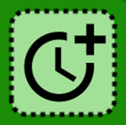
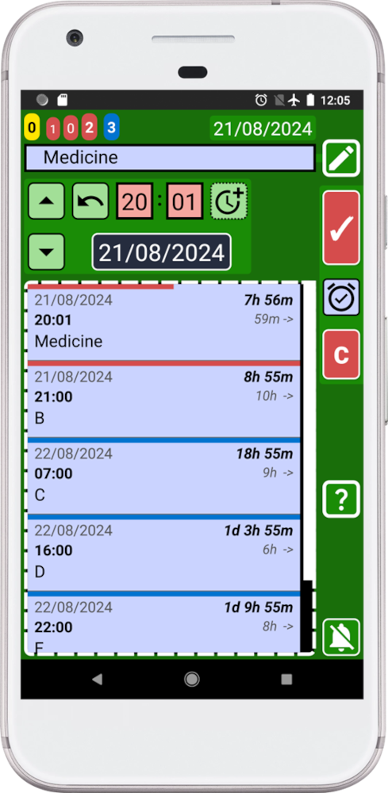

Let's assume we need to take a total of 6 pills and we need to take the medicine every 8 hours.
We can create reminders one by one and waste time doing mental calculations or we can use the SECURElogBook functions that will make things easier for us. We can also check if what we have done is correct.
For this example, we are going to use a case where we already have some records created (A, B, C, D, E, F). Those records will simulate records that you may already have:

1. The first thing we need to do is to open the creator window (green) by pressing button:
Add “Medicine START” as text for this record.
2. Let's assume we have already taken the first pill. To indicate it, press
The controls changed from yellow to black to indicate that we took the first pill (task completed).
3. To create the first reminder, we need to press
Note that we have created a black record, past and completed (first record on the list).
Because we cannot have two records with the same time, the record buttons are now red. To be able to copy or save a record we must change the time.
Now we are going to create the next reminder.
4. First change the reminder text from “Medicine START” to “Medicine”.
5. Now we need to indicate that the record we are going to create is not completed. To do it press
Now the button will be yellow, because the record we are creating it is set on the past and it is not completed.
6. Hold on  button to open the window to Add/Remove time and add 8h to the record:

Now that we have added time, the record is set in the future, for this reason the button turns blue (future record not completed = alarm on).
If records buttons still red is because there is already a record set at that time, first record on the list. You can hold on that record to edit it and change its time.
After we changed the time, adding 8h, the record buttons will be no longer red (blocked):

Record buttons are now blue, to indicate that we can create a reminder in the future (blue).
7. Create the new reminder by pressing

8. Repeat steps 6 and 7 three more times until we have 5 reminders.
9. To create last reminder, change the reminder text from “Medicine” to “Medicine END”.
10. Hold on button to open the window to Add/Remove time and add 8h to the record:
If records buttons still red is because there is already a record set at that time, first record on the list. You can hold on that record to edit it and change its time.
11. Create the last reminder by pressing

12. Press the back button on your device to go back to the main window (blue).
Now that you have created all the reminders, how can you check that you have done everything correctly? So far you will see something like this:

When all the records are together it is difficult to check if everything is right. How can we check that we did not make a mistake? The answer to that question is the search system.
To open the search press

The times between records are highlighted in yellow. Notice how the message at the bottom of the screen indicates that 6 records were found.
You can also open again the search window to see that number at the of the title (highlighted in yellow):

As we can see, SECURElogBook search, allows us to see the number of records containing “Medicine”, 6 records. But also, on the right side of each record, it indicates the time between the record and the next one. In this case is always 8 hours.
Now we can confirm that we have 6 records, for 6 pills, and the time between them is 8h.
SECURElogBook will alert you when it is time to take each pill using the alarm. Also, when this happens, the reminder will be highlighted in yellow. You will then need to turn the record black to indicate that you have taken the medication. Finally, all the information will be saved for you in case you need it in the future. With SECURElogBook is impossible to forget things!
SECURElogBook, when information goes in, worries get out! üòâ